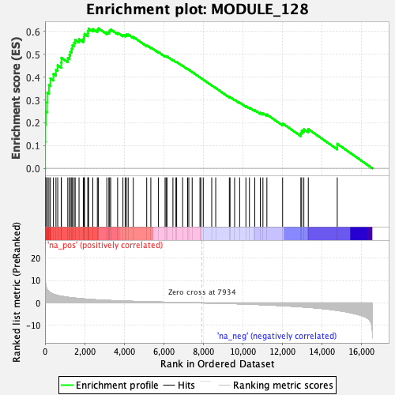
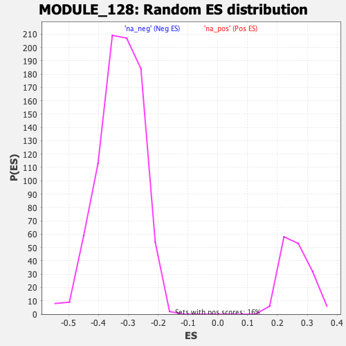

| | | Dataset | DE_genes2 |
| Phenotype | NoPhenotypeAvailable |
| Upregulated in class | na_pos |
| GeneSet | MODULE_128 |
| Enrichment Score (ES) | 0.6141014 |
| Normalized Enrichment Score (NES) | 2.34879 |
| Nominal p-value | 0.0 |
| FDR q-value | 0.0 |
| FWER p-Value | 0.0 |
Table: GSEA Results Summary

Fig 1: Enrichment plot: MODULE_128
Profile of the Running ES Score & Positions of GeneSet Members on the Rank Ordered List
| PROBE | GENE SYMBOL | GENE_TITLE | RANK IN GENE LIST | RANK METRIC SCORE | RUNNING ES | CORE ENRICHMENT | | 1 | CCL5 | | | 5 | 15.806 | 0.1164 | Yes |
| 2 | IL32 | | | 16 | 10.363 | 0.1923 | Yes |
| 3 | CD151 | | | 37 | 7.807 | 0.2487 | Yes |
| 4 | ITGB2 | | | 99 | 6.066 | 0.2898 | Yes |
| 5 | CYP27A1 | | | 110 | 5.875 | 0.3326 | Yes |
| 6 | CSF1R | | | 196 | 5.092 | 0.3650 | Yes |
| 7 | CTSB | | | 269 | 4.585 | 0.3945 | Yes |
| 8 | FN1 | | | 423 | 3.913 | 0.4140 | Yes |
| 9 | CXCL9 | | | 553 | 3.561 | 0.4325 | Yes |
| 10 | MMP9 | | | 641 | 3.327 | 0.4518 | Yes |
| 11 | LGMN | | | 818 | 3.014 | 0.4633 | Yes |
| 12 | GAS6 | | | 826 | 2.997 | 0.4850 | Yes |
| 13 | FAP | | | 1150 | 2.542 | 0.4842 | Yes |
| 14 | CD14 | | | 1235 | 2.439 | 0.4971 | Yes |
| 15 | THBS1 | | | 1276 | 2.381 | 0.5122 | Yes |
| 16 | IFITM3 | | | 1347 | 2.319 | 0.5251 | Yes |
| 17 | C3AR1 | | | 1383 | 2.286 | 0.5398 | Yes |
| 18 | GBP1 | | | 1468 | 2.209 | 0.5510 | Yes |
| 19 | SPARC | | | 1523 | 2.158 | 0.5637 | Yes |
| 20 | IFITM1 | | | 1717 | 1.977 | 0.5666 | Yes |
| 21 | TNFSF13 | | | 1933 | 1.807 | 0.5668 | Yes |
| 22 | ITGB5 | | | 1974 | 1.775 | 0.5775 | Yes |
| 23 | IFI30 | | | 1993 | 1.760 | 0.5894 | Yes |
| 24 | MMP2 | | | 2163 | 1.641 | 0.5913 | Yes |
| 25 | CCL2 | | | 2172 | 1.637 | 0.6029 | Yes |
| 26 | PDGFRA | | | 2198 | 1.621 | 0.6133 | Yes |
| 27 | LYZ | | | 2414 | 1.483 | 0.6112 | Yes |
| 28 | GBP2 | | | 2643 | 1.365 | 0.6074 | Yes |
| 29 | IL1R1 | | | 2697 | 1.339 | 0.6141 | Yes |
| 30 | VCAM1 | | | 3121 | 1.146 | 0.5969 | No |
| 31 | SRRM2 | | | 3225 | 1.102 | 0.5987 | No |
| 32 | CCL21 | | | 3264 | 1.087 | 0.6045 | No |
| 33 | MMP1 | | | 3316 | 1.070 | 0.6093 | No |
| 34 | DAB2 | | | 3665 | 0.945 | 0.5951 | No |
| 35 | APOL3 | | | 3934 | 0.857 | 0.5851 | No |
| 36 | LAG3 | | | 4048 | 0.822 | 0.5843 | No |
| 37 | GPX1 | | | 4109 | 0.806 | 0.5866 | No |
| 38 | DCTN3 | | | 4199 | 0.779 | 0.5870 | No |
| 39 | CD63 | | | 4458 | 0.704 | 0.5765 | No |
| 40 | FTH1 | | | 5136 | 0.533 | 0.5393 | No |
| 41 | IFITM2 | | | 5344 | 0.482 | 0.5303 | No |
| 42 | GJB1 | | | 5730 | 0.399 | 0.5099 | No |
| 43 | TIMP3 | | | 6064 | 0.333 | 0.4921 | No |
| 44 | IER3 | | | 6115 | 0.322 | 0.4914 | No |
| 45 | CEBPD | | | 6160 | 0.314 | 0.4911 | No |
| 46 | VWF | | | 6460 | 0.252 | 0.4748 | No |
| 47 | FPR1 | | | 6612 | 0.221 | 0.4672 | No |
| 48 | VIM | | | 6648 | 0.215 | 0.4667 | No |
| 49 | TIMP1 | | | 6949 | 0.163 | 0.4497 | No |
| 50 | CDH13 | | | 7202 | 0.116 | 0.4352 | No |
| 51 | LMO2 | | | 7262 | 0.104 | 0.4324 | No |
| 52 | TIMP2 | | | 7432 | 0.076 | 0.4227 | No |
| 53 | MGLL | | | 7826 | 0.013 | 0.3989 | No |
| 54 | DLC1 | | | 7871 | 0.008 | 0.3963 | No |
| 55 | ZNF347 | | | 7992 | -0.011 | 0.3891 | No |
| 56 | MYLK | | | 8420 | -0.079 | 0.3637 | No |
| 57 | CCND2 | | | 8621 | -0.113 | 0.3524 | No |
| 58 | BBS2 | | | 9310 | -0.267 | 0.3126 | No |
| 59 | S100A4 | | | 9344 | -0.275 | 0.3126 | No |
| 60 | KCTD12 | | | 9575 | -0.332 | 0.3011 | No |
| 61 | TBC1D8B | | | 9830 | -0.408 | 0.2887 | No |
| 62 | DAPK1 | | | 10146 | -0.506 | 0.2733 | No |
| 63 | EARS2 | | | 10324 | -0.561 | 0.2666 | No |
| 64 | CYBB | | | 10595 | -0.661 | 0.2551 | No |
| 65 | CPM | | | 10873 | -0.755 | 0.2439 | No |
| 66 | VMP1 | | | 11006 | -0.806 | 0.2418 | No |
| 67 | PCDH9 | | | 11206 | -0.883 | 0.2362 | No |
| 68 | IL2RB | | | 12000 | -1.222 | 0.1971 | No |
| 69 | CYP1B1 | | | 12922 | -1.728 | 0.1539 | No |
| 70 | FTL | | | 12965 | -1.748 | 0.1642 | No |
| 71 | MAPK12 | | | 13073 | -1.813 | 0.1711 | No |
| 72 | FADS1 | | | 13297 | -1.951 | 0.1720 | No |
| 73 | CTSL | | | 14760 | -3.315 | 0.1076 | No |
Table: GSEA details [plain text format]

Fig 2: MODULE_128: Random ES distribution
Gene set null distribution of ES for MODULE_128